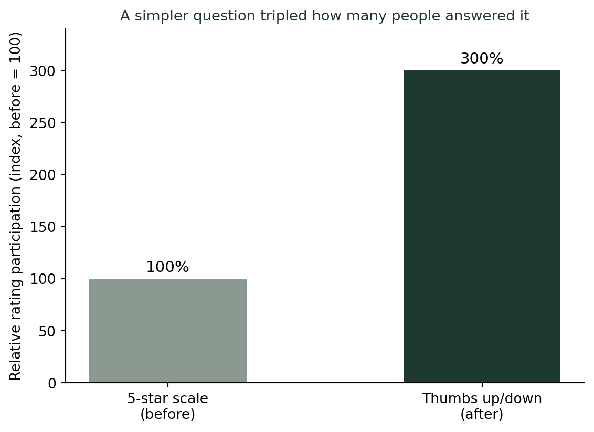
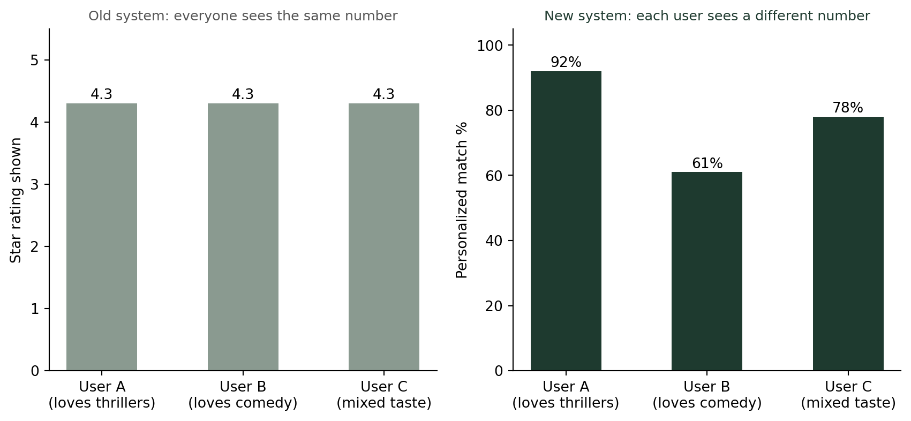

(숫자로 사람을 줄 세우는 법) 별점 대신 순위를 매기는 이유 — 넷플릭스 평점 시스템
통계기초
기술통계
2017년 넷플릭스는 5점 별점제를 없애고 좋아요·싫어요(엄지척)로 바꿨다. 2016년 테스트에서 이 방식이 평가 참여를 200% 늘렸기 때문이다. 지금은 그마저도 화면에 보여주지 않고, 사람마다 다른 ‘몇 % 일치’ 매치율을 보여준다. 이번 주 다룬 지니계수·상대평가·순위의 착시·별점의 함정이 실제 기업의 의사결정에서 어떻게 한꺼번에 등장했는지 살펴본다.
별 다섯 개가 사라진 날
2017년, 넷플릭스는 오랫동안 써온 5점 별점제를 없애고 좋아요·싫어요(엄지척) 두 가지 선택지로 바꿨다. 그 전해인 2016년, 수십만 명을 대상으로 진행한 테스트에서 이 단순한 방식이 평가 참여율을 200% 끌어올렸다는 결과가 나왔기 때문이다. 그리고 지금 넷플릭스 화면에는 별점도, 좋아요 개수도 보이지 않는다. 대신 작품마다 “회원님과 97% 일치” 같은 개인화된 숫자가 붙어 있다. 이번 주 우리는 지니계수, 상대평가와 절대평가, 순위의 착시, 별점 평균의 함정을 차례로 다뤘다. 넷플릭스의 이 결정 하나에 그 네 가지 이야기가 전부 들어 있다.
이건 바로 어제 다룬 별점의 함정과 정확히 맞닿아 있다. 5단계 중 하나를 고르는 건 생각보다 품이 든다 — “이게 4점인가 5점인가” 고민하다가 아예 평가를 포기하는 사람이 많다. 반면 좋아요·싫어요는 즉각적이다. 참여자가 3배로 늘어난다는 건, 어제 살펴본 “리뷰 5개 vs 리뷰 500개” 문제에서 거의 모든 작품이 리뷰 500개 쪽에 가까워진다는 뜻이다. 표본이 커지면 평가는 훨씬 더 믿을 만해진다.
단순한 질문이 오히려 정보를 더 많이 모을 수도 있다
5점 척도 하나는 이론적으로 2점 척도보다 더 많은 정보를 담는다. 그런데 응답자 수가 3배로 늘면, 정보량을 거칠게 추정해도(선택지 5개 대비 2개의 정보량 차이는 약 2.3배, 응답자 증가는 3배) 전체적으로 모이는 정보의 총량은 오히려 늘어난다. “더 정교한 질문”보다 “더 많은 사람이 답하는 질문”이 통계적으로 더 유리할 수 있다는 뜻이다.
“이 별점은 대체 누구의 의견인가”라는 혼란
넷플릭스가 별점을 없앤 데는 또 다른 이유가 있었다. 많은 이용자들이 작품에 붙은 별점을 “다른 모든 이용자들의 평균 의견”으로 오해했다. 그런데 실제로 그 별점은 이미 각 이용자의 시청 이력을 바탕으로 넷플릭스가 예측한 개인화된 점수였다. 즉 내가 본 “4.5점”과 옆 사람이 본 “4.5점”은 애초에 서로 다른 계산에서 나온 다른 숫자였는데, 화면에는 똑같이 “4.5점”으로만 보였던 것이다. 이건 순위의 착시 글에서 다룬 문제의 사촌이다 — 숫자 하나(별점)가 절대적 지표(내 취향 예측)인지 상대적 지표(전체 평균)인지 구분이 안 되면, 그 숫자는 오해를 부른다.
크라우드 평균에서 개인 맞춤 순위로
넷플릭스가 최종적으로 도입한 건 별점을 대체할 또 다른 하나의 숫자가 아니라, 사람마다 다른 숫자였다.

같은 스릴러 영화라도, 스릴러를 좋아하는 A에게는 “92% 일치”로, 코미디를 좋아하는 B에게는 “61% 일치”로 보여준다. 이건 상대평가와 절대평가 글에서 다룬 구도를 한 단계 더 밀어붙인 것이다 — 이제 비교 대상은 “다른 시청자들”조차 아니다. 비교 대상은 오직 “과거의 나”뿐이다. 지니계수 글에서 우리는 수천만 명의 소득을 숫자 하나로 요약하는 법을 다뤘는데, 넷플릭스는 정반대의 길을 택했다 — 수천만 명의 의견을 숫자 하나로 뭉치는 대신, 한 사람 한 사람에게 다른 숫자를 따로 계산해준다.
이번 주를 관통한 하나의 질문
이번 주 다섯 편의 글은 결국 같은 질문의 다른 얼굴들이었다. “이 숫자는 무엇을, 누구를 대신해서 요약하고 있는가?” 지니계수는 국가 전체를, 상대평가 등급은 같은 학년 학생들을, 국가 순위는 179개 다른 나라를, 별점은 나보다 먼저 다녀간 손님들을 대신해 하나의 숫자로 압축한다. 넷플릭스의 결론은 이랬다 — 어떤 경우에는, 요약하지 않고 사람 수만큼 숫자를 따로 계산해주는 편이 더 정직하다.
결론: 모두를 위한 하나의 숫자는 없을 수도 있다
나는 이번 주 강의를 마무리하며 학생들에게 이렇게 묻는다. “지니계수, 등급, 순위, 별점 — 이 넷의 공통점이 뭘까요?” 답은 모두 “여러 사람의 정보를 하나의 숫자로 줄 세우려는 시도”라는 것이다. 그리고 넷플릭스의 사례는 그 시도에 항상 대가가 따른다는 걸 보여준다 — 하나로 뭉치면 참여는 줄고 오해는 늘고 착시는 커진다. 때로는 숫자를 하나로 합치는 대신, 보는 사람 수만큼 답을 따로 준비하는 게 더 나은 선택일 수 있다.